लेवल टू रोड टेस्ट
आंकड़े बताते हैं कि सभी उम्र के नए ड्राइवरों के अनुभवी ड्राइवरों की तुलना में गंभीर या घातक दुर्घटनाओं में शामिल होने की संभावना कहीं अधिक होती है।
नए ड्राइवरों को बेहतर और सुरक्षित ड्राइविंग आदतें विकसित करने में मदद करने के लिए, ओंटारियो ने 1994 में पहली बार कार या मोटरसाइकिल लाइसेंस के लिए आवेदन करने वाले सभी ड्राइवरों के लिए ग्रेजुएटेड लाइसेंसिंग प्रणाली शुरू की। ग्रेजुएटेड लाइसेंसिंग आपको कम जोखिम वाले वातावरण में धीरे-धीरे ड्राइविंग कौशल और अनुभव प्राप्त करने की सुविधा देती है। दो चरणों वाली इस लाइसेंसिंग प्रणाली को पूरा करने में कम से कम 20 महीने लगते हैं और इसमें दो रोड टेस्ट शामिल हैं। लेवल टू (G2) रोड टेस्ट पास करने पर आपको क्लास G ड्राइविंग के सभी अधिकार प्राप्त हो जाते हैं।
लेवल वन रोड टेस्ट में बुनियादी ड्राइविंग कौशल का परीक्षण होता है, जबकि लेवल टू में उन्नत ज्ञान और कौशल का परीक्षण होता है जो आमतौर पर ड्राइविंग के अनुभव से प्राप्त होते हैं। टेस्ट के दौरान, परीक्षक आपको निर्देश देगा। ड्राइविंग संबंधी कार्यों को पूरा करते समय, परीक्षक यह सुनिश्चित करने के लिए निगरानी करेगा कि आप उनसे संबंधित कार्यों को सफलतापूर्वक पूरा कर रहे हैं।
जी2 रोड टेस्ट में एक्सप्रेसवे पर ड्राइविंग का एक भाग शामिल है। आगे बढ़ने के लिए, आपको "राजमार्ग ड्राइविंग अनुभव की घोषणा" फॉर्म भरना और उस पर हस्ताक्षर करना होगा ताकि यह सुनिश्चित हो सके कि आपके पास इस भाग को पूरा करने के लिए पर्याप्त एक्सप्रेसवे ड्राइविंग अनुभव है। फॉर्म में, आपको यह बताना होगा कि रोड टेस्ट से तीन महीने पहले आपने कितनी बार फ्रीवे और/या कम से कम 80 किमी/घंटा की गति सीमा वाले राजमार्ग पर गाड़ी चलाई है। आपको इन यात्राओं की औसत लंबाई भी बतानी होगी (उदाहरण के लिए, 5 किलोमीटर से कम, 5 से 15 किलोमीटर के बीच, 15 किलोमीटर से अधिक)। फ्रीवे में शामिल हैं: 400, 401, 402, 403, 404, 405, 406, 407, 409, 410, 416, 417, 420, 427, क्वीन एलिजाबेथ वे, डॉन वैली पार्कवे, गार्डिनर एक्सप्रेसवे, ईसी रो एक्सप्रेसवे और कोनेस्टोगा पार्कवे। यदि आपके पास राजमार्ग पर गाड़ी चलाने का पर्याप्त अनुभव नहीं है, तो परीक्षक को सड़क परीक्षा रद्द करनी होगी। इससे आपकी अग्रिम भुगतान की गई सड़क परीक्षा शुल्क का 50 प्रतिशत ज़ब्त हो जाएगा। परीक्षा को पुनः निर्धारित करने के लिए, आपको रद्द होने के कारण खोई हुई सड़क परीक्षा शुल्क का 50 प्रतिशत भुगतान करना होगा। परीक्षा को पुनः निर्धारित करने से पहले सुनिश्चित करें कि आपने राजमार्ग पर गाड़ी चलाने का आवश्यक अनुभव प्राप्त कर लिया है।
आपकी तैयारी में सहायता के लिए, इस अध्याय में लेवल टू रोड टेस्ट में अपेक्षित विभिन्न कार्यों और गतिविधियों के बारे में बताया गया है। यह केवल एक मार्गदर्शिका है। ड्राइविंग संबंधी कार्यों के बारे में अधिक जानकारी के लिए, अध्याय 2 और 3 पढ़ें।
अगली सूचना तक, जी रोड टेस्ट में वे तत्व शामिल नहीं होंगे जो पहले से ही जी2 रोड टेस्ट में शामिल हैं:
- समानांतर पार्किंग
- सड़क किनारे रुकने के स्थान
- 3-पॉइंट टर्न
- आवासीय इलाकों में गाड़ी चलाना
इस परीक्षा में अभी भी सभी मूलभूत तत्व शामिल होंगे, जैसे कि:
- प्रमुख सड़कों और एक्सप्रेसवे पर गाड़ी चलाना, जिसमें सड़कों पर चढ़ना और उतरना, उचित गति और दूरी बनाए रखना, सिग्नल देना आदि शामिल हैं।
- मोड़, घुमाव और लेन परिवर्तन
- चौराहों
- व्यावसायिक क्षेत्रों में वाहन चलाना
जी रोड टेस्ट में क्या-क्या शामिल है, इसके बारे में और अधिक जानें।
बाएँ और दाएँ मुड़ें
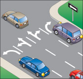
आरेख 6-1-1
दृष्टिकोण
यह ड्राइविंग कार्य तब शुरू होता है जब परीक्षक आपको बाएँ या दाएँ मुड़ने के लिए कहता है, और चौराहे में प्रवेश करने से ठीक पहले समाप्त होता है। सुनिश्चित करें कि आप निम्नलिखित कार्य करें:
ट्रैफ़िक जाँच
गति धीमी करने से पहले, अपने चारों ओर ध्यान से देखें। पीछे आने वाले वाहनों की जाँच के लिए रियरव्यू मिरर और साइड मिरर का उपयोग करें। लेन बदलते समय, अपने कंधे के ऊपर से देखकर ब्लाइंड स्पॉट की जाँच करना न भूलें।
लेन
रास्ता साफ होते ही सबसे बाईं या सबसे दाईं लेन में चले जाएं।
संकेत
मोड़ लेते समय गति धीमी करने से पहले अपना सिग्नल चालू कर लें, जब तक कि आपके और चौराहे के बीच में किसी साइड रोड या ड्राइववे से वाहन सड़क पर आने का इंतजार न कर रहे हों। इन प्रवेश द्वारों को पार करने तक प्रतीक्षा करें ताकि अन्य वाहन चालकों को यह न लगे कि आप चौराहे से पहले मुड़ रहे हैं।
रफ़्तार
मोड़ के पास पहुँचते ही धीरे-धीरे गति कम करें। मैनुअल ट्रांसमिशन वाली गाड़ी में, गति कम करते समय आप गियर बदल सकते हैं। क्लच पैडल पर पैर रखकर गाड़ी को बेकाबू न छोड़ें।
अंतरिक्ष
गति धीमी करते समय, अपने आगे वाले वाहन से कम से कम दो से तीन सेकंड की दूरी बनाए रखें।
अगर रुक जाए
यदि रास्ता साफ न हो या आपको स्टॉप साइन या लाल बत्ती का सामना करना पड़े, तो बिना रुके अपना मोड़ पूरा न कर पाने की स्थिति में आपको यह ड्राइविंग कार्य करना होगा। इन चरणों का पालन करना याद रखें:
रुकना
पूरी तरह से रुक जाएं। अपने वाहन को आगे या पीछे लुढ़कने न दें। जब यातायात की स्थिति अनुकूल हो, तो आगे बढ़कर यह जांच लें कि रास्ता साफ है या नहीं, या मोड़ लेने के लिए आगे बढ़ें। यदि आपको स्टॉप लाइन पार करने के बाद रुकना पड़े, तो पीछे न हटें।
अंतरिक्ष
चौराहे पर किसी अन्य वाहन के पीछे रुकने पर, आगे निकलने और बिना पीछे हटे ओवरटेक करने के लिए पर्याप्त जगह छोड़ें। यह जगह छोड़ने से आपको तीन तरह से सुरक्षा मिलती है: यदि आगे वाला वाहन खराब हो जाता है, तो आप उसके चारों ओर से निकल सकते हैं; यदि पीछे से टक्कर लगती है, तो यह आपको आगे वाले वाहन से टकराने से बचाता है; और यदि आगे वाला वाहन पीछे की ओर लुढ़कता है या पीछे हटता है, तो टक्कर का खतरा कम हो जाता है।
स्टॉप लाइन
यदि आप लाल बत्ती या स्टॉप साइन वाले चौराहे पर पहुंचने वाले पहले वाहन हैं, तो यदि फुटपाथ पर स्टॉप लाइन अंकित है तो उसके पीछे रुकें। यदि स्टॉप लाइन नहीं है, तो क्रॉसिंग पर रुकें, चाहे वह अंकित हो या नहीं। यदि क्रॉसिंग नहीं है, तो फुटपाथ के किनारे पर रुकें। यदि फुटपाथ नहीं है, तो चौराहे के किनारे पर रुकें।
पहियों
बाएं मुड़ने के लिए प्रतीक्षा करते समय, अपने आगे के पहियों को सीधा रखें। पहियों को बाएं मोड़ने से आपका वाहन सामने से आ रहे यातायात में जा सकता है। दाएं मुड़ने के लिए प्रतीक्षा करते समय, यदि चौराहे को पार कर रहे पैदल यात्रियों से टकराने का खतरा हो, तो पहियों को सीधा रखें। घुमावदार फुटपाथ वाले बड़े चौराहे पर जहां आप दाएं मुड़ रहे हों, अपने वाहन को फुटपाथ के समानांतर इस तरह मोड़ें कि आपके और फुटपाथ के बीच कोई दूसरा वाहन न आ सके।
मोड़ लेते हुए
ड्राइविंग कार्य में मोड़ लेते समय आपकी क्रियाएँ शामिल होती हैं। निम्नलिखित बातों का ध्यान रखें:
ट्रैफ़िक जाँच
यदि आप रुके हुए हैं, हरी बत्ती का इंतज़ार कर रहे हैं या रास्ता साफ़ होने का इंतज़ार कर रहे हैं, तो अपने चारों ओर यातायात पर नज़र रखें। चौराहे में प्रवेश करने से ठीक पहले, बाईं ओर, आगे और दाईं ओर देखकर सुनिश्चित करें कि रास्ता साफ़ है। यदि आपको अपने मार्ग के अधिकार के बारे में कोई संदेह है, तो आस-पास के चालकों या पैदल यात्रियों से नज़रें मिलाने का प्रयास करें। यदि मुड़ते समय किसी अन्य वाहन द्वारा आपको ओवरटेक करने की संभावना है, तो मुड़ने से पहले अपने ब्लाइंड स्पॉट की जाँच करें। यदि किसी अन्य वाहन या पैदल यात्री को मार्ग का अधिकार है और उसे आपके वाहन से बचने के लिए कार्रवाई करनी पड़ती है, तो आपने यातायात की ठीक से जाँच नहीं की है।
दोनों हाथ
मोड़ लेते समय स्टीयरिंग व्हील को घुमाने के लिए दोनों हाथों का इस्तेमाल करें। मोड़ लेते समय अन्य वाहनों से सबसे ज़्यादा खतरा होता है। स्टीयरिंग व्हील पर दोनों हाथों का इस्तेमाल करने से आपको ज़रूरत पड़ने पर स्टीयरिंग पर पूरा नियंत्रण मिलता है। इसका अपवाद तब है जब आप किसी ऐसी शारीरिक अक्षमता से ग्रस्त हों जिसके कारण आप दोनों हाथों का इस्तेमाल नहीं कर सकते।
गियर
मैनुअल ट्रांसमिशन वाली गाड़ी में मोड़ लेते समय गियर न बदलें। अगर ज़रूरी हो, तो गाड़ी चलने के तुरंत बाद, लेकिन मोड़ में पूरी तरह मुड़ने से पहले गियर बदल सकते हैं। चार लेन से ज़्यादा चौड़े चौराहे पर भी गियर बदल सकते हैं, अगर ऐसा न करने से दूसरे वाहनों की गति धीमी हो रही हो। आम तौर पर, गियर न बदलने से मोड़ लेते समय गाड़ी पर आपका ज़्यादा नियंत्रण रहता है।
रफ़्तार
सुरक्षित रूप से चलना शुरू करने के चार से पांच सेकंड के भीतर आगे बढ़ें। एक समान गति से मोड़ लें, और मोड़ पूरा होने पर गति बढ़ाएँ। इतनी धीमी गति से गाड़ी चलाएँ कि आप अपने वाहन पर पूरा नियंत्रण रख सकें, लेकिन अन्य वाहनों की गति धीमी न हो।
चौड़ा/छोटा
चौराहे वाली सड़क पर लेन चिह्नों या फुटपाथों को पार किए बिना संबंधित लेन में मुड़ें।
मोड़ पूरा करना
यह ड्राइविंग कार्य मोड़ को पूरा करता है। यह चौराहे वाली सड़क पर प्रवेश करने से शुरू होता है और सामान्य यातायात गति पर लौटने पर समाप्त होता है। निम्नलिखित कार्य करें:
लेन
जिस लेन से आप मुड़े थे, उसी लेन में अपना मोड़ समाप्त करें। यदि आप किसी बहु-लेन वाली सड़क पर बाएँ मुड़ रहे हैं, तो सामान्य यातायात गति पर लौटें और सुरक्षित होने पर किनारे वाली लेन में चले जाएँ। यदि आप किसी ऐसी सड़क पर दाएँ मुड़ रहे हैं जहाँ दाहिनी लेन खड़ी गाड़ियों से अवरुद्ध है या अन्य कारणों से उपयोग नहीं की जा सकती है, तो सीधे अगली उपलब्ध लेन में चले जाएँ।
ट्रैफ़िक जाँच
जैसे ही आप सामान्य यातायात गति पर वापस आएं, नई सड़क पर यातायात की स्थिति से अवगत होने के लिए अपने दर्पणों की जांच करें।
रफ़्तार
सामान्य यातायात गति पर लौटने के लिए धीरे-धीरे गति बढ़ाएं ताकि आप आसपास के यातायात में घुलमिल जाएं। कम यातायात में, गति को मध्यम रखें। अधिक यातायात में, आपको गति को और तेज़ करना पड़ सकता है। मैनुअल ट्रांसमिशन वाले वाहन में, गति बढ़ाते समय गियर बदलते रहें।
चौराहे पर रुकें
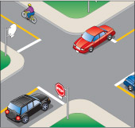
आरेख 6-2-1
दृष्टिकोण
यह ड्राइविंग टास्क उन चौराहों पर किया जाता है जहाँ आपको रुकना होता है। यह उस बिंदु से शुरू होता है जहाँ से आपको चौराहा दिखाई देता है और चौराहे में प्रवेश करने से ठीक पहले समाप्त होता है। इन निर्देशों का पालन करना सुनिश्चित करें:
ट्रैफ़िक जाँच
गति धीमी करने से पहले, अपने चारों ओर देखें। पीछे से आ रहे वाहनों की स्थिति जानने के लिए अपने दर्पणों का उपयोग करें।
रफ़्तार
चौराहे के पास पहुँचते ही धीरे-धीरे गति कम करें। यदि आपकी गाड़ी में मैनुअल ट्रांसमिशन है, तो गति कम करते समय आप गियर बदल सकते हैं। क्लच पैडल पर पैर रखकर गाड़ी को बेकाबू न छोड़ें।
अंतरिक्ष
गति धीमी करते समय, अपने आगे वाले वाहन से कम से कम दो से तीन सेकंड की दूरी बनाए रखें।
विश्राम चिह्न
इस ड्राइविंग कार्य में चौराहे पर रुकने और आगे बढ़ने के लिए प्रतीक्षा करते समय आपके द्वारा की जाने वाली कार्रवाइयां शामिल हैं। इन बिंदुओं को याद रखें:
रुकना
पूरी तरह से रुक जाएं। अपने वाहन को आगे या पीछे न लुढ़कने दें। जब यातायात की स्थिति अनुकूल हो, तो आगे बढ़कर यह सुनिश्चित कर लें कि रास्ता साफ है या चौराहे को पार करना शुरू कर दें। यदि आपको स्टॉप लाइन पार करने के बाद रुकना पड़े, तो पीछे न हटें।
अंतरिक्ष
चौराहे पर किसी अन्य वाहन के पीछे रुकने पर, आगे निकलने और बिना पीछे हटे ओवरटेक करने के लिए पर्याप्त जगह छोड़ें। यह जगह छोड़ने से आपको तीन तरह से सुरक्षा मिलती है: यदि आगे वाला वाहन खराब हो जाता है, तो आप उसके चारों ओर से निकल सकते हैं; यदि पीछे से टक्कर लगती है, तो यह आपको आगे धकेले जाने से बचाता है; और यदि आगे वाला वाहन पीछे की ओर लुढ़कता है या पीछे हटता है, तो टक्कर का खतरा कम हो जाता है।
स्टॉप लाइन
यदि आप लाल बत्ती या स्टॉप साइन वाले चौराहे पर पहुंचने वाले पहले वाहन हैं, तो यदि फुटपाथ पर स्टॉप लाइन अंकित है तो उसके पीछे रुकें। यदि स्टॉप लाइन नहीं है, तो क्रॉसिंग पर रुकें, चाहे वह अंकित हो या नहीं। यदि क्रॉसिंग नहीं है, तो फुटपाथ के किनारे पर रुकें। यदि फुटपाथ नहीं है, तो चौराहे के किनारे पर रुकें।
गाड़ी चलाते हुए
इस कार्य में चौराहे से गुजरते समय और सामान्य यातायात गति पर वापस आते समय आपके द्वारा की जाने वाली कार्रवाइयां शामिल हैं। इन कार्रवाइयों का पालन करना सुनिश्चित करें:
ट्रैफ़िक जाँच
यदि आप रुके हुए हैं, हरी बत्ती का इंतज़ार कर रहे हैं या रास्ता साफ़ होने का इंतज़ार कर रहे हैं, तो अपने चारों ओर यातायात पर नज़र रखें। चौराहे में प्रवेश करने से ठीक पहले, बाईं ओर, आगे और दाईं ओर देखकर सुनिश्चित करें कि रास्ता साफ़ है। यदि आपको अपने मार्ग के अधिकार के बारे में कोई संदेह है, तो आस-पास के चालकों या पैदल यात्रियों से नज़रें मिलाने का प्रयास करें। यदि किसी अन्य वाहन या पैदल यात्री को मार्ग का अधिकार है और उसे आपके वाहन से बचने के लिए कार्रवाई करनी पड़ती है, तो आपने यातायात की ठीक से जाँच नहीं की है।
दोनों हाथ
चौराहे से गुजरते समय दोनों हाथ स्टीयरिंग व्हील पर रखें। चौराहे को पार करते समय अन्य वाहनों से आपको सबसे अधिक खतरा होता है। स्टीयरिंग व्हील पर दोनों हाथ रखने से आपको सबसे ज्यादा जरूरत पड़ने पर स्टीयरिंग पर पूरा नियंत्रण मिलता है। इसका अपवाद तब है जब आप किसी ऐसी शारीरिक अक्षमता से ग्रस्त हों जिसके कारण आप दोनों हाथों का उपयोग नहीं कर सकते।
गियर
मैनुअल ट्रांसमिशन वाली गाड़ी में, चौराहे को पार करते समय गियर न बदलें। यदि आवश्यक हो, तो गाड़ी चलने के तुरंत बाद, लेकिन चौराहे में पूरी तरह प्रवेश करने से पहले गियर बदल सकते हैं। चार लेन से अधिक चौड़े चौराहे पर भी गियर बदल सकते हैं, यदि ऐसा न करने से अन्य वाहनों की गति धीमी हो रही हो। सामान्यतः, गियर न बदलने से आपको गाड़ी पर बेहतर नियंत्रण मिलता है।
ट्रैफ़िक जाँच
जैसे ही आप सामान्य यातायात गति पर लौटें, चौराहे से गुजरने के बाद यातायात की स्थिति से अवगत होने के लिए अपने दर्पणों की जांच करें।
रफ़्तार
सुरक्षित रूप से चलना शुरू करने के बाद चार से पांच सेकंड के भीतर आगे बढ़ें। सामान्य यातायात गति पर लौटने के लिए धीरे-धीरे गति बढ़ाएं ताकि आप आसपास के यातायात के साथ घुलमिल जाएं। कम यातायात में, गति मध्यम रखें। अधिक यातायात में, आपको गति तेज़ करनी पड़ सकती है। मैनुअल ट्रांसमिशन वाले वाहन में, गति बढ़ाते समय गियर बदलें।
चौराहे के माध्यम से
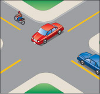
आरेख 6-3-1
दृष्टिकोण
यह ड्राइविंग कार्य उन चौराहों पर किया जाता है जहाँ आपको रुकने की आवश्यकता नहीं हो सकती है। यह उस बिंदु से शुरू होता है जहाँ से आप चौराहे को देख सकते हैं और चौराहे के प्रवेश द्वार से ठीक पहले समाप्त होता है। निम्नलिखित बातों का ध्यान रखें:
ट्रैफ़िक जाँच
चौराहे के पास पहुँचते ही, दाईं और बाईं ओर से आने वाली सड़क पर यातायात देखें। यदि आपको चौराहे पर गति धीमी करनी पड़े, तो पीछे से आ रहे यातायात को देखने के लिए अपने दर्पणों में देखें।
रफ़्तार
चौराहे से गुजरते समय अपनी गति एक समान रखें, जब तक कि आपके सामने से कोई वाहन गुजरने की संभावना न हो। यदि ऐसा हो, तो गति धीमी कर लें या ब्रेक पर पैर रखें, ताकि जरूरत पड़ने पर आप गति कम कर सकें या रुक सकें। चौराहे को पार करने वाले पैदल यात्रियों और चौराहे में प्रवेश कर रहे या तेज गति से आ रहे वाहनों पर ध्यान दें।
अंतरिक्ष
अपने आगे वाले वाहन से कम से कम दो से तीन सेकंड की दूरी बनाए रखें।
गाड़ी चलाते हुए
इस ड्राइविंग कार्य में चौराहे में प्रवेश करने से लेकर उसे पार करने और सामान्य यातायात गति पर वापस आने तक की आपकी गतिविधियाँ शामिल हैं। इन बिंदुओं को याद रखें:
लेन
लेन मार्किंग को पार न करें या चौराहे पर लेन न बदलें। यदि आपकी लेन किसी वाहन द्वारा अवरुद्ध है जो बाएँ मुड़ रहा है या कोई वाहन दाईं ओर से चौराहे में प्रवेश कर रहा है, तो वाहन को ओवरटेक करने के लिए आगे बढ़ने के बजाय गति धीमी करें या रुकें।
दोनों हाथ
चौराहे से गुजरते समय दोनों हाथ स्टीयरिंग व्हील पर रखें। चौराहे को पार करते समय अन्य वाहनों से आपको सबसे अधिक खतरा होता है। स्टीयरिंग व्हील पर दोनों हाथ रखने से आपको सबसे ज्यादा जरूरत पड़ने पर स्टीयरिंग पर पूरा नियंत्रण मिलता है। इसका अपवाद तब है जब आप किसी ऐसी शारीरिक अक्षमता से ग्रस्त हों जिसके कारण आप दोनों हाथों का उपयोग नहीं कर सकते।
गियर
मैनुअल ट्रांसमिशन वाली गाड़ी में, चौराहे को पार करते समय गियर न बदलें। यदि आवश्यक हो, तो गाड़ी के चलने के तुरंत बाद, लेकिन चौराहे में पूरी तरह प्रवेश करने से पहले गियर बदल सकते हैं। चार लेन से अधिक चौड़े चौराहे पर भी गियर बदल सकते हैं, यदि ऐसा न करने से अन्य वाहनों की गति धीमी हो रही हो। सामान्यतः, गियर न बदलने से आपको अपनी गाड़ी पर बेहतर नियंत्रण मिलता है।
ट्रैफ़िक जाँच
यदि आपने चौराहे पर गति धीमी की थी, तो सामान्य यातायात गति पर लौटने से पहले अपने दर्पणों को फिर से जांच लें।
फ़्रीवे
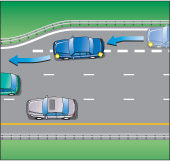
आरेख 6-4-1
में प्रवेश कर
यह ड्राइविंग टास्क फ्रीवे के प्रवेश रैंप से शुरू होता है और फ्रीवे पर ट्रैफिक की गति तक पहुँचने पर समाप्त होता है। निम्नलिखित बातों का ध्यान रखें:
ट्रैफ़िक जाँच
रैंप पर चलते समय, जैसे ही आपको पीछे से फ़्रीवे ट्रैफ़िक आता हुआ दिखाई दे, सुरक्षित रूप से लेन बदलने के लिए जगह ढूंढने के लिए अपने मिरर और ब्लाइंड स्पॉट को चेक करें। साथ ही, रैंप पर अपने आगे चल रहे वाहनों पर नज़र रखें और सुरक्षित दूरी बनाए रखें। ट्रैफ़िक में सुरक्षित रूप से शामिल होने तक, आगे देखते रहने, मिरर चेक करते रहने और ब्लाइंड स्पॉट चेक करने के लिए पीछे मुड़कर देखते रहने के बीच अपना ध्यान बांटते रहें।
संकेत
यदि आपने अभी तक ऐसा नहीं किया है, तो जैसे ही फ्रीवे पर मौजूद वाहन रैंप पर आपके वाहन को देख सकें, तुरंत अपना सिग्नल चालू कर दें।
अंतरिक्ष
रैंप पर और फ्रीवे ट्रैफिक में शामिल होते समय, अपने आगे वाले वाहन से कम से कम दो से तीन सेकंड की दूरी बनाए रखें। अपनी मर्जिंग का समय इस तरह तय करें कि आप किसी दूसरे वाहन के बगल में या उसके ब्लाइंड स्पॉट में न आ जाएं। यदि ट्रैफिक बहुत अधिक है या इतनी तेज़ गति से चल रहा है कि आदर्श दूरी बनाए रखना मुश्किल है, तो अपनी गति को इस तरह समायोजित करें जिससे सर्वोत्तम संभव दूरी बनी रहे। रैंप पर और एक्सेलरेशन लेन में, लेन मार्किंग के अंदर ही रहें।
रफ़्तार
प्रवेश रैंप के मोड़ पर, अपनी गति इतनी धीमी रखें कि मोड़ के कारण उत्पन्न बल से आपके वाहन के अंदर मौजूद वस्तुएं और लोग धक्का न खाएं। त्वरण लेन में, अपनी गति को फ्रीवे यातायात के बराबर बढ़ा लें। लेन बदलते समय, अपनी गति को नियंत्रित करते हुए फ्रीवे यातायात के साथ सहजता से घुलमिल जाएं।
मर्ज
फ्रीवे के यातायात में सुचारू रूप से और धीरे-धीरे शामिल होते हुए निकटतम फ्रीवे लेन के केंद्र तक पहुंचें।
रद्द करने का संकेत
हाईवे पर ट्रैफिक में शामिल होते ही अपना सिग्नल बंद कर दें।
गाड़ी चलाते हुए
यह ड्राइविंग टास्क फ्रीवे पर गाड़ी चलाते समय आपकी गतिविधियों की जांच करता है (लेकिन इसमें मर्जिंग, लेन बदलना या एग्जिट करना शामिल नहीं है)। निम्नलिखित बिंदुओं को ध्यान में रखें:
ट्रैफ़िक जाँच
गाड़ी चलाते समय, अपने चारों ओर के ट्रैफिक पर लगातार नज़र रखें और हर पांच से दस सेकंड में अपने मिरर में देखते रहें।
रफ़्तार
गति सीमा से अधिक गति से गाड़ी चलाने या अनावश्यक रूप से धीमी गति से गाड़ी चलाने से बचें। यथासंभव, एक स्थिर गति से गाड़ी चलाएं। आगे देखें कि अगले 12 से 15 सेकंड में आप कहाँ होंगे, ताकि आप गति बदलकर उन खतरनाक स्थितियों या बाधाओं से बच सकें।
अंतरिक्ष
हमेशा अपने आगे वाले वाहन से कम से कम दो से तीन सेकंड की दूरी बनाए रखें। यदि कोई दूसरा वाहन आपके बहुत करीब चल रहा हो, तो अपने आगे और अधिक जगह बनाएं या लेन बदल लें। अपने वाहन के दोनों ओर पर्याप्त जगह रखने का प्रयास करें और अन्य वाहनों के ब्लाइंड स्पॉट में गाड़ी चलाने से बचें। बड़े वाहनों के पीछे गाड़ी चलाने से बचें। उनके आकार के कारण, वे अन्य वाहनों की तुलना में यातायात को देखने में अधिक बाधा डालते हैं।
बाहर निकल रहा है
यह ड्राइविंग टास्क तब शुरू होता है जब आप फ्रीवे के सबसे दाहिने लेन में गाड़ी चला रहे होते हैं और आपको वह एग्जिट दिखाई देता है जिससे आप निकलना चाहते हैं। यह तब समाप्त होता है जब आप एग्जिट रैंप के अंत तक पहुँच जाते हैं। निम्नलिखित बातों का ध्यान रखें:
ट्रैफ़िक जाँच
एग्जिट लेन में जाने से पहले, बाएँ और दाएँ देखें और अपने मिरर चेक करें। यदि आपके दाईं ओर कोई ट्रैफिक लेन है, जैसे कि प्रवेश रैंप से निकलने वाली एक्सेलरेशन लेन या पक्की सड़क का किनारा, तो अपने दाईं ओर के ब्लाइंड स्पॉट को भी देखना न भूलें।
संकेत
एग्जिट लेन तक पहुंचने से पहले अपना सिग्नल चालू कर लें।
निकास लेन
एग्जिट लेन की शुरुआत में आराम से और धीरे-धीरे प्रवेश करें। लेन मार्किंग के अंदर ही रहें। यदि दो या अधिक एग्जिट लेन हैं, तो लेन बदलने के लिए फुटपाथ पर बनी ठोस रेखाओं को पार न करें।
रफ़्तार
एग्जिट लेन में पूरी तरह प्रवेश करने से पहले गति धीमी न करें। लेन में प्रवेश करने के बाद, धीरे-धीरे गति कम करें ताकि आपके पीछे वाहनों का जमावड़ा न हो। एग्जिट रैंप के मोड़ पर, अपनी गति इतनी धीमी रखें कि मोड़ के कारण उत्पन्न बल से वाहन के अंदर बैठे लोगों या वस्तुओं को धक्का न लगे। यदि आपका वाहन मैनुअल ट्रांसमिशन वाला है, तो गति कम करते समय गियर डाउन करें।
अंतरिक्ष
अपने आगे वाले वाहन से कम से कम दो से तीन सेकंड की दूरी बनाए रखें।
रद्द करने का संकेत
एग्जिट रैंप पर पहुंचने के बाद अपना सिग्नल बंद कर दें।
लेन परिवर्तन
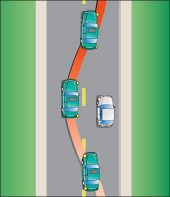
आरेख 6-5-1
यह ड्राइविंग कार्य लेन बदलने के लिए जगह ढूंढने से शुरू होता है और लेन बदलने के बाद समाप्त होता है। इन चरणों का पालन करना याद रखें:
ट्रैफ़िक जाँच
लेन बदलते समय सुरक्षित रूप से चारों ओर ध्यान दें। सामने, शीशों और ब्लाइंड स्पॉट पर नज़र रखें। यदि आप जिस लेन में जा रहे हैं उसके बगल में कोई और लेन है, तो उस लेन में भी यातायात देखें ताकि उसी समय लेन में प्रवेश कर रहे किसी वाहन से टक्कर न हो जाए।
संकेत
जब लेन बदलने के लिए पर्याप्त जगह हो, तब सिग्नल चालू करें। सिग्नल देने के बाद, दूसरी लेन में जाने से पहले एक बार फिर ब्लाइंड स्पॉट चेक कर लें। सिग्नल इतनी जल्दी चालू कर दें कि पीछे से आ रहे वाहनों को सिग्नल पर प्रतिक्रिया करने का समय मिल जाए। यदि जिस लेन में आप जा रहे हैं उसमें ट्रैफिक अधिक है, तो लेन बदलने के लिए पर्याप्त जगह होने से पहले ही सिग्नल चालू कर सकते हैं। इससे पीछे से आ रहे वाहनों को पता चल जाएगा कि आप लेन बदलने के लिए जगह ढूंढ रहे हैं।
अंतरिक्ष
अपने आगे वाले वाहन से कम से कम दो से तीन सेकंड की दूरी बनाए रखें। यदि आप जिस लेन में जा रहे हैं उसके बगल में कोई और लेन है, तो सावधान रहें कि किसी अन्य वाहन के बगल में या उसके ब्लाइंड स्पॉट में न जाएं।
रफ़्तार
अपनी गति को नई लेन में चल रहे यातायात की गति के अनुरूप समायोजित करें।
परिवर्तन
नई लेन के बीच में सहज और क्रमिक गति से आगे बढ़ते हुए लेन बदलें।
दोनों हाथ
लेन बदलते समय स्टीयरिंग व्हील पर दोनों हाथ रखें। स्टीयरिंग व्हील पर दोनों हाथों का इस्तेमाल करने से आपको स्टीयरिंग पर अधिकतम नियंत्रण मिलता है। इसका अपवाद तब है जब आप किसी ऐसी शारीरिक अक्षमता से ग्रस्त हों जिसके कारण आप दोनों हाथों का उपयोग नहीं कर सकते।
रद्द करने का संकेत
लेन बदलने के तुरंत बाद अपना सिग्नल बंद कर दें।
सड़क किनारे रुकना
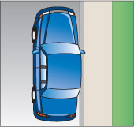
आरेख 6-6-1
दृष्टिकोण
यह ड्राइविंग कार्य परीक्षक के रुकने के निर्देश से शुरू होता है और आपके रुकने पर समाप्त होता है। सुनिश्चित करें कि आप निम्नलिखित कार्य करें:
ट्रैफ़िक जाँच
गति धीमी करने से पहले, अपने शीशों में देखें और यह सुनिश्चित करें कि सड़क किनारे रुकना कानूनी रूप से वैध है या नहीं (संकेतों को देखें)। फिर अपने वाहन के आगे और पीछे से आ रहे वाहनों पर नज़र रखें। दोनों दिशाओं में 150 मीटर का फासला सुरक्षित रूप से रुकने के लिए पर्याप्त जगह प्रदान करता है। यदि दाईं ओर से कोई वाहन या पैदल यात्री आपको ओवरटेक करने की संभावना है, तो रुकने से ठीक पहले अपने दाईं ओर के ब्लाइंड स्पॉट की जांच करें।
संकेत
गति धीमी करने से पहले सिग्नल चालू कर दें, जब तक कि आपके और आपके रुकने के स्थान के बीच में किसी साइड रोड या ड्राइववे से वाहन सड़क पर आने का इंतजार न कर रहे हों। इन प्रवेश द्वारों को पार करने तक प्रतीक्षा करें ताकि अन्य वाहन चालकों को यह न लगे कि आप रुकने के स्थान से पहले मुड़ रहे हैं।
रफ़्तार
स्टॉप के पास पहुँचते ही धीरे-धीरे गति कम करें। मैनुअल ट्रांसमिशन वाली गाड़ी में, गति कम करते समय आप गियर बदल सकते हैं। क्लच पैडल पर पैर रखकर गाड़ी को बिना एक्सीलरेटर दबाए न चलाएं।
पद
फुटपाथ के समानांतर रुकें और उससे लगभग 30 सेंटीमीटर से अधिक दूर न रुकें। यदि फुटपाथ नहीं है, तो सड़क के व्यस्त हिस्से से जितना संभव हो सके दूर रुकें। ऐसी जगह न रुकें जहाँ आप किसी प्रवेश द्वार या अन्य यातायात को अवरुद्ध करें।
विश्राम चिह्न
इस ड्राइविंग कार्य में रुकने के बाद की जाने वाली कार्रवाइयां शामिल हैं। निम्नलिखित बातों का ध्यान रखें:
संकेत
सिग्नल बंद करें और इमरजेंसी लाइट चालू करें।
पार्क
यदि आपकी गाड़ी में ऑटोमैटिक ट्रांसमिशन है, तो गियर सेलेक्टर को पार्क पोजीशन में रखें और पार्किंग ब्रेक लगा दें। यदि आपकी गाड़ी में मैनुअल ट्रांसमिशन है, तो पार्किंग ब्रेक लगा दें और इंजन बंद न करते समय न्यूट्रल में शिफ्ट कर दें, या इंजन बंद करते समय लो या रिवर्स गियर में शिफ्ट कर दें। पहाड़ी पर गाड़ी पार्क करते समय, पहियों को फुटपाथ से सटाकर उचित दिशा में रखें ताकि गाड़ी लुढ़कने से बच सके।
फिर शुरू करना
यह ड्राइविंग कार्य तब शुरू होता है जब परीक्षक आपको सड़क पर वापस आने के लिए कहता है और तब समाप्त होता है जब आप सामान्य यातायात गति पर वापस आ जाते हैं। निम्नलिखित कार्य करें:
शुरू
इंजन चालू करें। पार्किंग ब्रेक छोड़ें और सड़क पर वापस आने के लिए सही गियर चुनें।
संकेत
अपनी इमरजेंसी लाइट बंद करें और बाएँ मुड़ने का सिग्नल चालू करें।
ट्रैफ़िक जाँच
स्टॉप से निकलने से ठीक पहले, अपने मिरर और बाईं ओर के ब्लाइंड स्पॉट को चेक कर लें।
रफ़्तार
सामान्य यातायात गति पर लौटने के लिए धीरे-धीरे गति बढ़ाएं ताकि आप आसपास के यातायात में घुलमिल जाएं। कम यातायात में, गति को मध्यम रखें। अधिक यातायात में, आपको गति को और तेज़ करना पड़ सकता है। मैनुअल ट्रांसमिशन वाले वाहन में, गति बढ़ाते समय गियर बदलते रहें।
रद्द करने का संकेत
सड़क पर वापस आते ही अपना सिग्नल बंद कर दें।
वक्र
यह ड्राइविंग टास्क तब शुरू होता है जब मोड़ दिखाई देता है और तब समाप्त होता है जब आप उसे पूरी तरह से पार कर लेते हैं। इन चरणों का पालन करें:
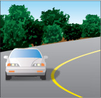
आरेख 6-7-1
रफ़्तार
मोड़ के पास पहुँचते ही, उसके लिए सुरक्षित गति का अनुमान लगाने का प्रयास करें। इसके लिए, सुरक्षित गति दर्शाने वाले संकेत, मोड़ का आकार और आप जिस सड़क पर गाड़ी चला रहे हैं, उसके प्रकार जैसे संकेतों पर ध्यान दें। मोड़ के 30 मीटर अंदर पहुँचते ही अपनी गति को मोड़ के लिए सुरक्षित गति तक कम कर लें। यदि मोड़ पूरी तरह से दिखाई नहीं देता है, तो और भी धीरे गाड़ी चलाएँ, ताकि सामने से आ रही गाड़ियाँ आपकी लेन में न आ जाएँ या मोड़ आपकी अपेक्षा से अधिक संकरा न हो। मोड़ शुरू होने से पहले ही गति कम कर लें ताकि मोड़ पर ब्रेक लगाने की आवश्यकता न पड़े। मोड़ पर, अपनी गति को स्थिर और इतना धीमा रखें कि मोड़ पर मुड़ने से उत्पन्न बल के कारण आपकी गाड़ी के अंदर बैठे लोगों और वस्तुओं को धक्का न लगे। मोड़ के अंत के पास, सामान्य गति पर वापस आने के लिए गति बढ़ाना शुरू करें। यदि आपकी गाड़ी में मैनुअल ट्रांसमिशन है, तो मोड़ पर गियर न बदलें। गियर न बदलने से आपको अपनी गाड़ी पर अधिक नियंत्रण मिलता है और गियर बदलते समय पहिए जाम होने का खतरा कम हो जाता है।
लेन
मोड़ में प्रवेश करते समय, जितना संभव हो सके सामने या चारों ओर देखें। इससे आपको मोड़ के दौरान सीधी रेखा में और लेन के केंद्र में बने रहने में मदद मिलेगी। यदि आप केवल अपने सामने की सड़क पर ही देखते रहेंगे, तो संभावना है कि आप लेन में इधर-उधर भटकते रहेंगे, जिससे आपको बार-बार स्टीयरिंग को ठीक करना पड़ेगा।
व्यापार अनुभाग
यह ड्राइविंग कार्य सड़क के सीधे हिस्सों पर किया जाता है जहाँ कई व्यवसाय स्थित हैं। निम्नलिखित कार्यों को अवश्य करें:
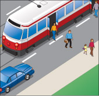
आरेख 6-8-1
ट्रैफ़िक जाँच
किसी व्यावसायिक क्षेत्र में, चौराहों के अलावा भी कई ऐसे स्थान होते हैं जहाँ वाहन या पैदल यात्री सड़क पर आ सकते हैं। इनमें व्यवसायों, संस्थानों और निर्माण स्थलों के प्रवेश द्वार, साथ ही पैदल यात्री और रेलवे क्रॉसिंग शामिल हैं। इन सभी स्थानों पर, सड़क पर आने वाले वाहनों या पैदल यात्रियों की जाँच के लिए बाएँ और दाएँ दोनों ओर देखें।
दर्पण जाँच
गाड़ी चलाते समय हर पांच से दस सेकंड में अपने मिरर चेक करते रहें। भारी ट्रैफिक में या जहां वाहन अलग-अलग गति से चल रहे हों, वहां मिरर को और भी अधिक बार चेक करें।
लेन
सीधे जाने वाले वाहनों के लिए सबसे सुरक्षित लेन में गाड़ी चलाएं। यह आमतौर पर सड़क के किनारे वाली लेन होती है। हालांकि, यदि सड़क के किनारे वाली लेन में यातायात अवरुद्ध है या सड़क के किनारे कई खतरे हैं, तो बीच वाली लेन अधिक सुरक्षित विकल्प हो सकती है। लेन के बीच में और लेन मार्किंग के भीतर ही गाड़ी चलाएं। आगे देखें कि अगले 12 से 15 सेकंड में आप कहाँ होंगे, ताकि आप लेन बदलकर उन खतरनाक स्थितियों या बाधाओं से बच सकें।
रफ़्तार
गति सीमा से अधिक गति से गाड़ी चलाने या अनावश्यक रूप से धीमी गति से गाड़ी चलाने से बचें। यथासंभव, एक स्थिर गति से गाड़ी चलाएं। आगे देखें कि अगले 12 से 15 सेकंड में आप कहाँ होंगे, ताकि आप गति बदलकर उन खतरनाक स्थितियों या बाधाओं से बच सकें।
अंतरिक्ष
अपने आगे वाले वाहन से कम से कम दो से तीन सेकंड की दूरी बनाए रखें। यदि कोई दूसरा वाहन आपके बहुत करीब चल रहा हो तो दूरी बढ़ा दें। बहु-लेन वाली सड़क पर, अपने वाहन के दोनों ओर पर्याप्त जगह रखने का प्रयास करें और अन्य वाहनों के ब्लाइंड स्पॉट में गाड़ी चलाने से बचें। धीमी गति वाले यातायात में, बड़े वाहनों के पीछे गाड़ी चलाने से बचें जो आगे के यातायात को देखने में बाधा डालते हैं। जब आप किसी वाहन के पीछे रुकें, तो उसके पिछले पहियों को देखने या बिना पीछे हटे उसके चारों ओर से निकलने के लिए पर्याप्त जगह छोड़ें।
आवासीय अनुभाग
यह ड्राइविंग कार्य आवासीय या ग्रामीण सड़कों के सीधे हिस्सों पर किया जाता है। इन बातों का ध्यान रखें:
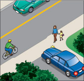
आरेख 6-9-1
ट्रैफ़िक जाँच
आवासीय सड़क पर, स्कूलों के प्रवेश द्वार, पैदल यात्री क्रॉसिंग, ड्राइववे, फुटपाथ और यातायात संबंधी खतरों से संबंधित किसी भी अन्य स्थान पर ध्यान दें। ग्रामीण सड़क पर, घरों, खेतों, व्यवसायों और औद्योगिक स्थलों के प्रवेश द्वारों पर ध्यान दें। इन सभी स्थानों पर, सड़क पर आने वाले वाहनों या पैदल यात्रियों की जांच के लिए बाएँ और दाएँ दोनों ओर देखें।
दर्पण जाँच
गाड़ी चलाते समय हर पांच से दस सेकंड में अपने मिरर चेक करते रहें। भारी ट्रैफिक में या जहां वाहन अलग-अलग गति से चल रहे हों, वहां मिरर को और भी अधिक बार चेक करें।
लेन
लेन के बीचोंबीच चलें। यदि लेन मार्किंग नहीं है, तो सड़क के बीचोंबीच चलें, खड़ी गाड़ियों या पैदल यात्रियों से दूर रहें। यदि मोड़ या पहाड़ी के कारण सड़क पर आगे का दृश्य दिखाई नहीं दे रहा है, तो दाईं ओर मुड़ें ताकि बीच की रेखा पार कर रही सामने से आ रही गाड़ी से टक्कर न हो। आगे 12 से 15 सेकंड में आप जहां होंगे, वहां की स्थिति पर नज़र रखें और देखें कि कहीं कोई खतरनाक स्थिति या बाधा तो नहीं है जिसे लेन बदलकर टाला जा सकता है।
रफ़्तार
गति सीमा से अधिक गति से गाड़ी चलाने या अनावश्यक रूप से धीमी गति से गाड़ी चलाने से बचें। यथासंभव, एक स्थिर गति से गाड़ी चलाएं। आगे देखें कि अगले 12 से 15 सेकंड में आप कहाँ होंगे, ताकि आप गति बदलकर उन खतरनाक स्थितियों या बाधाओं से बच सकें।
अंतरिक्ष
अपने आगे वाले वाहन से कम से कम दो से तीन सेकंड की दूरी बनाए रखें। यदि कोई दूसरा वाहन आपके बहुत करीब चल रहा हो तो दूरी बढ़ा दें। धीमी गति वाले यातायात में, बड़े वाहनों के पीछे गाड़ी चलाने से बचें जो आगे के यातायात को देखने में बाधा डालते हैं। जब आप किसी वाहन के पीछे रुकें, तो उसके पिछले पहियों को देखने या बिना पीछे हटे उसके चारों ओर से निकलने के लिए पर्याप्त जगह छोड़ें।
समानांतर पार्क
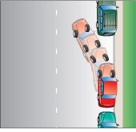
आरेख 6-10-1
दृष्टिकोण
यह ड्राइविंग कार्य तब शुरू होता है जब परीक्षक आपको पार्क करने के लिए कहता है और तब समाप्त होता है जब आप रुक जाते हैं और पार्किंग स्थान में गाड़ी बैक करने के लिए तैयार होते हैं। इन बातों का ध्यान रखें:
ट्रैफ़िक जाँच
गति धीमी करने से पहले, पीछे से आ रही गाड़ियों के लिए अपने मिरर में देखें। पीछे हटने के लिए गाड़ी खड़ी करने से पहले, ब्लाइंड स्पॉट में गाड़ी को चेक करें।
संकेत
गति धीमी करने से पहले सिग्नल चालू कर दें, जब तक कि आपके और आपके रुकने के स्थान के बीच में साइड रोड या ड्राइववे से वाहन सड़क पर आने की प्रतीक्षा न कर रहे हों। इन प्रवेश द्वारों को पार करने तक प्रतीक्षा करें ताकि अन्य वाहन चालकों को यह न लगे कि आप समानांतर पार्किंग स्थान से पहले मुड़ रहे हैं।
रफ़्तार
धीरे-धीरे गति कम करें। मैनुअल ट्रांसमिशन वाली गाड़ी में, गति कम करते समय आप गियर बदल सकते हैं। क्लच पैडल पर पैर रखकर गाड़ी को बेकाबू न होने दें।
रुकना
खाली पार्किंग स्थान के सामने खड़ी गाड़ी (वास्तविक या काल्पनिक) के बगल में या उसके समानांतर रुकें। अपनी गाड़ी और खड़ी गाड़ी के बीच कम से कम 60 सेंटीमीटर की दूरी रखें। गाड़ी पूरी तरह से खाली पार्किंग स्थान के सामने आने पर रुकें।
पार्क
इस ड्राइविंग टास्क में पैरेलल पार्किंग स्पेस में गाड़ी पार्क करने के लिए आपको जो कदम उठाने हैं, वे शामिल हैं। निम्नलिखित बातों का ध्यान रखें:
ट्रैफ़िक जाँच
गाड़ी को पीछे करने से पहले, चारों ओर देखें और अपने शीशों और दोनों ब्लाइंड स्पॉट की जाँच करें। जब तक रास्ता साफ़ न हो या ट्रैफ़िक रुक न जाए और आपको पार्क करने की जगह न मिल जाए, तब तक गाड़ी को पीछे करना शुरू न करें।
बैकअप
गाड़ी को रिवर्स करते हुए पार्किंग स्पेस में ले जाएं और स्टीयरिंग व्हील को फुटपाथ की ओर घुमाएं। जब आपकी गाड़ी लगभग आधी पार्किंग स्पेस में आ जाए, तो स्टीयरिंग घुमाकर उसे फुटपाथ के समानांतर लाएं। पार्किंग स्पेस में गाड़ी पार्क करने के बाद, फुटपाथ पर बने निशानों के अंदर गाड़ी पार्क करने के लिए या आगे या पीछे वाली गाड़ी को निकलने के लिए जगह देने के लिए गाड़ी को आगे या पीछे करें। पार्किंग स्पेस में गाड़ी पार्क करते समय फुटपाथ से न टकराएं और न ही किसी दूसरी गाड़ी को छुएं। जहां फुटपाथ न हो, वहां सड़क के मुख्य हिस्से से हटकर गाड़ी पार्क करें।
पार्क
यदि आपकी गाड़ी में ऑटोमैटिक ट्रांसमिशन है, तो गियर सेलेक्टर को पार्क पोजीशन में रखें और पार्किंग ब्रेक लगा दें। यदि आपकी गाड़ी में मैनुअल ट्रांसमिशन है, तो पार्किंग ब्रेक लगा दें और इंजन बंद न करते समय न्यूट्रल में शिफ्ट कर दें, या इंजन बंद करते समय लो या रिवर्स गियर में शिफ्ट कर दें। पहाड़ी पर गाड़ी पार्क करते समय, गाड़ी को लुढ़कने से बचाने के लिए पहियों को उचित दिशा में घुमाएँ।
फिर शुरू करना
यह ड्राइविंग कार्य तब शुरू होता है जब परीक्षक आपको पार्किंग स्थल से आगे बढ़ने के लिए कहता है और तब समाप्त होता है जब आप सामान्य यातायात गति पर वापस आ जाते हैं। इन बातों का ध्यान रखें:
शुरू
इंजन चालू करें। पार्किंग ब्रेक छोड़ें और सड़क पर वापस आने के लिए सही गियर चुनें।
संकेत
अपना सिग्नल चालू करें।
ट्रैफ़िक जाँच
गाड़ी पार्किंग से बाहर निकालने से ठीक पहले, अपने शीशों और ब्लाइंड स्पॉट की जांच कर लें।
रफ़्तार
सामान्य यातायात गति पर लौटने के लिए धीरे-धीरे गति बढ़ाएं ताकि आप आसपास के यातायात में घुलमिल जाएं। कम यातायात में, गति को मध्यम रखें। अधिक यातायात में, आपको गति को और तेज़ करना पड़ सकता है। मैनुअल ट्रांसमिशन वाले वाहन में, गति बढ़ाते समय गियर बदलते रहें।
रद्द करने का संकेत
पार्किंग स्थल से निकलने के बाद सिग्नल बंद कर दें।
तीन-बिंदु मोड़
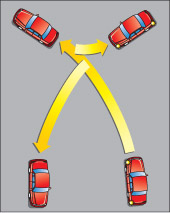
आरेख 6-11-1
दृष्टिकोण
यह ड्राइविंग टास्क तब शुरू होता है जब परीक्षक आपको रुकने और गाड़ी मोड़ने के लिए कहता है। यह तब समाप्त होता है जब आप लगभग रुक चुके होते हैं और मोड़ लेने के लिए तैयार होते हैं। निम्नलिखित बातों का ध्यान रखें:
ट्रैफ़िक जाँच
गति धीमी करने से पहले, अपने आगे और पीछे के यातायात की जाँच करें। यदि आवश्यक हो, तो रुकने के लिए सड़क के दाहिनी ओर जाने से पहले अपने ब्लाइंड स्पॉट की जाँच करें।
संकेत
गति धीमी करने से पहले सिग्नल चालू कर दें, जब तक कि आपके और आपके रुकने के स्थान के बीच में साइड रोड या ड्राइववे से सड़क पर आने के लिए वाहन प्रतीक्षा न कर रहे हों। इन प्रवेश द्वारों को पार करने तक प्रतीक्षा करें ताकि अन्य वाहन चालकों को यह न लगे कि आप मुड़ रहे हैं।
रफ़्तार
धीरे-धीरे गति कम करें। मैनुअल ट्रांसमिशन वाली गाड़ी में, गति कम करते समय आप गियर बदल सकते हैं। क्लच पैडल पर पैर रखकर गाड़ी को बेकाबू न होने दें।
पद
गाड़ी को फुटपाथ के समानांतर रोकें और उससे 30 सेंटीमीटर से अधिक दूर न रुकें। यदि फुटपाथ नहीं है, तो सड़क के व्यस्त हिस्से से जितना संभव हो सके दूर रुकें। ऐसी जगह न रुकें जहाँ आप किसी प्रवेश द्वार या अन्य यातायात को अवरुद्ध करें।
मुड़ो
इस ड्राइविंग कार्य में यू-टर्न लेने की प्रक्रिया शामिल है और यह तब समाप्त होता है जब आप विपरीत दिशा में गाड़ी चलाने के लिए तैयार होते हैं। इन बातों का ध्यान रखें:
ट्रैफ़िक जाँच
मोड़ लेने से ठीक पहले अपने मिरर और ब्लाइंड स्पॉट को चेक करें। रास्ता साफ होने या ट्रैफिक रुकने तक प्रतीक्षा करें ताकि आप मुड़ सकें। हर बार मोड़ लेते समय रुकते समय दोनों दिशाओं में ट्रैफिक देखें।
संकेत
मुड़ने से पहले अपना बायां सिग्नल चालू कर लें।
मुड़ो
स्टीयरिंग व्हील को तेज़ी से बाईं ओर घुमाकर, धीरे-धीरे और आराम से सड़क पार करें। जब आप सड़क के बिल्कुल बाईं ओर पहुँच जाएँ, तो रुकें और गाड़ी को रिवर्स गियर में डालें। स्टीयरिंग व्हील को तेज़ी से दाईं ओर घुमाकर, गाड़ी को रिवर्स करें ताकि वह नई दिशा में मुड़ जाए। रुकें और आगे बढ़ने के लिए गियर बदलें। मुड़ने के लिए पूरी सड़क का उपयोग करें, केवल एक बार रिवर्स करें। सड़क के किनारे या फुटपाथ पर रिवर्स न करें।
फिर शुरू करना
यह ड्राइविंग प्रक्रिया तब शुरू होती है जब आप मुड़कर आगे बढ़ने के लिए तैयार होते हैं और सामान्य यातायात गति पर वापस आने पर समाप्त होती है। सुनिश्चित करें कि आप ये कदम उठाएं:
ट्रैफ़िक जाँच
गति बढ़ाने से पहले अपने मिरर चेक कर लें।
रफ़्तार
सामान्य यातायात गति पर लौटने के लिए धीरे-धीरे गति बढ़ाएं ताकि आप आसपास के यातायात में घुलमिल जाएं। कम यातायात में, गति को मध्यम रखें। अधिक यातायात में, आपको गति को और तेज़ करना पड़ सकता है। मैनुअल ट्रांसमिशन वाले वाहन में, गति बढ़ाते समय गियर बदलते रहें।